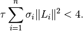
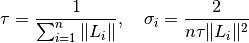
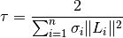
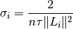

douglas_rachford_pd_stepsize¶
- odl.solvers.nonsmooth.douglas_rachford.douglas_rachford_pd_stepsize(L, tau=None, sigma=None)[source]¶
Default step sizes for
douglas_rachford_pd.- Parameters:
- Lsequence of
Operatoror float The operators or the norms of the operators that are used in the
douglas_rachford_pdmethod. ForOperatorentries, the norm is computed withOperator.norm(estimate=True).- taupositive float, optional
Use this value for
tauinstead of computing it from the operator norms, see Notes.- sigmatuple of float, optional
The
sigmastep size parameters for the dual update.
- Lsequence of
- Returns:
- taufloat
The
taustep size parameter for the primal update.- sigmatuple of float
The
sigmastep size parameters for the dual update.
Notes
To guarantee convergence, the parameters
 ,
,  and
and  need to satisfy
need to satisfy
This function has 4 options,
/ given or not
given.
given or not
given.If neither
nor are given, they are chosen as:
If only
is given, is set to:
If only
is given, is set
to:
If both are given, they are returned as-is without further validation.